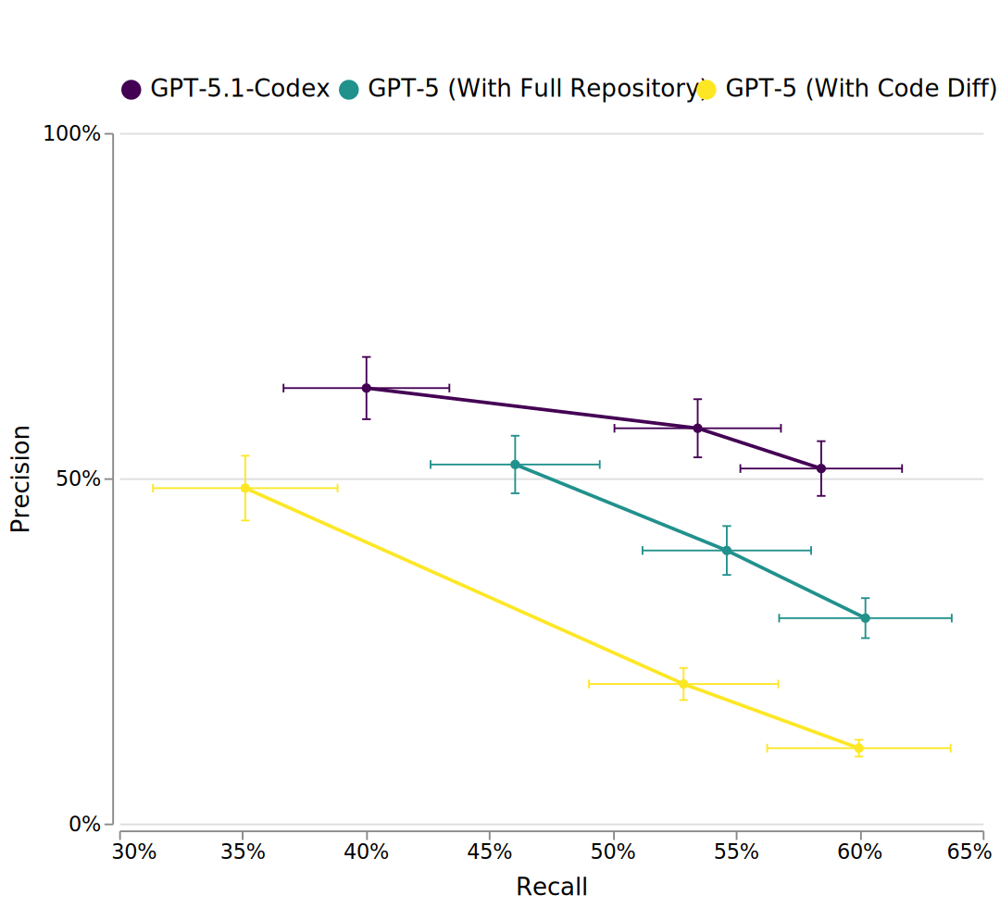
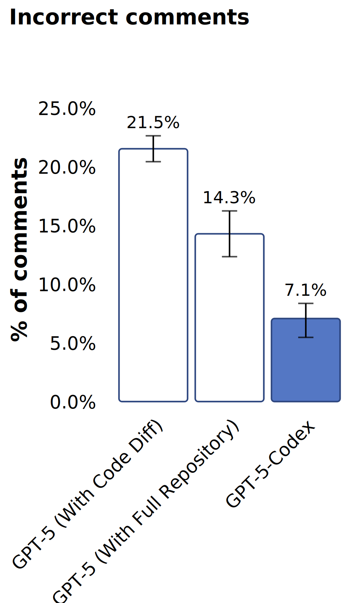
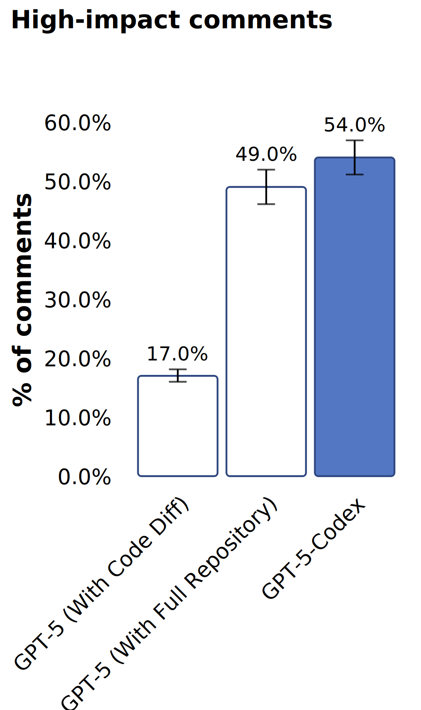
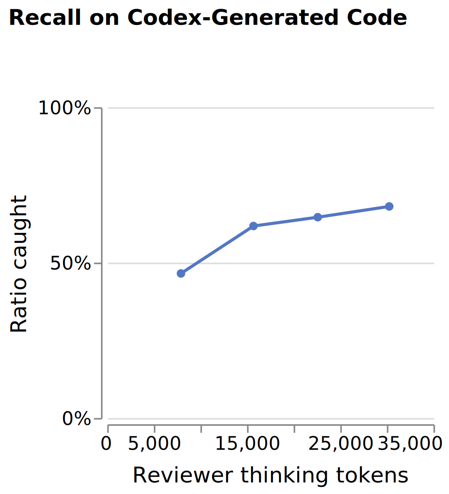
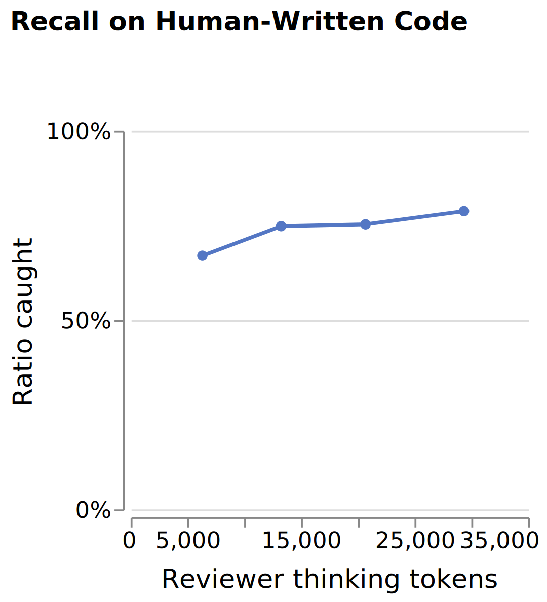

原文：A Practical Approach to Verifying Code at Scale 来源：OpenAI Alignment | 2025-12-01 作者：Maja Trębacz, Sam Arnesen 等（Codex 团队）
· · ·
随着自主协作编码系统的普及，产出的代码量迅速超出人工审查的极限。差距越大，AI 编写的代码引入严重 bug 和漏洞的风险就越大——无论是意外还是故意。
我们不能假设代码生成系统是可信或正确的；必须检查它们的产出。自动代码审查是一种实用的输出监控手段，与思维链监控、行为监控、内部激活监控、行为测试、诚实训练等安全工作互补，构成纵深防御（defense-in-depth）策略的一部分。
本文分享了我们在 gpt-5-codex 和 gpt-5.1-codex-max 中训练专用 agentic 代码审查器的经验[1]。我们讨论了如何通过赋予审查器仓库级工具和代码执行能力来同时提升召回率和精确度，以及部署时的考量如何引导我们走向高信号、低对齐税（alignment tax）的设置。这些不是理论：在 OpenAI 内部，每个 PR 都会被自动审查，许多工程师在推送前会在 Codex CLI 中运行 /review，模型已经保护了高价值实验并拦截了阻塞发布的问题。
· · ·
防御措施失败，往往不是因为技术上有错，而是因为太不实用，用户选择绕过它。一个又慢又吵又麻烦的系统注定会被跳过。部署代码审查 agent 时，我们明确接受了一个权衡：适度降低召回率，换取高信号质量和开发者信任。先优化信噪比，然后才在不损害可靠性的前提下提升召回率。
代码审查器可以试图标记代码变更中每一个可能的问题。但实际上，很多"问题"是误报或对用户意图的误解。我们希望看到一个 bug 发现的预期收益超过验证它的成本和误报带来的损害。也就是说，我们希望发现能最大化：
$$P(\text{correct}) \times C_{\text{saved}} - C_{\text{human verification}} - P(\text{incorrect}) \times C_{\text{false alarm}}$$
技术上正确但偏向风格的评论甚至可能产生负效用（比如在个人研究笔记本中指出注释拼写错误就不值得）。虽然我们对精确度和召回率的平衡做了主观判断，但我们认为重要的是允许这个权衡和其他准则通过自定义任务指令或仓库级 AGENTS.md 规范来调节。
图1：发现真实 bug（召回率）和避免评论虚假问题（精确度）之间存在权衡。我们可以用不同的开发者准则来引导模型，从"只输出最关键、最确定的破坏性问题"到"尽可能多地分享发现"。GPT-5.1-Codex 通过专用脚手架和仓库访问，同时提升了召回率和精确度，超越了 GPT-5。

· · ·
早期研究（如 CriticGPT，2024年6月）塑造了我们的方法，但它是为更简单的任务设计的，不适合实际部署。这个审查器增加了推理、工具使用、仓库级上下文以及精确度/延迟目标，才跨过了采用门槛。
之前大多数代码审查尝试只给模型提供变更的 diff，最多加上简短的周围上下文。这样审查速度最快，但经常遗漏关于整个代码库以及变更与其依赖之间交互的重要上下文。我们评估了给 GPT-5 模型提供仓库访问和代码执行能力的效果，发现这产生了更强的审查器——能捕获更多关键问题，同时减少误报。专门针对代码审查的训练进一步改善了结果。
图2：对流行开源仓库近期提交的代码审查性能的人工评估。专门为更高信噪比训练的 GPT-5-Codex 产生的评论更不容易出错或不重要，将用户注意力留给关键问题。使用默认 prompt 且只能访问 PR diff 上下文时，GPT-5 能识别大量高影响评论，但也产生大量误报。


· · ·
训练时的验证和面向人类的审查看似相似，但它们解决的是根本不同的问题，因此需要不同的设计。
训练代码生成模型时，我们依赖自动检查来大规模减少错误，优先尽可能多地捕获潜在错误，而不是避免误报。这些奖励模型过度敏感是可以接受的。训练时的检查还可以利用关于任务的额外信息，允许它们强制执行精确的指令遵循，而无需推断开发者的意图。
部署时的代码审查优先级恰好相反。审查器必须处理由人类或人机协作工作流产生的模糊、真实世界代码，通常规范不完整、约定还在演变。它必须避免过度断言意图，在不同语言和领域保持鲁棒，最重要的是建立用户信任。
用单一验证器同时服务两种场景，两边都会失败。如果生成器在训练时过度优化以取悦奖励信号，它可能学到损害下游审查质量的行为——比如过于谨慎或风格化的输出让用户感到沮丧。因此我们将训练上下文感知的审查器视为 Codex 训练中的独立任务，专为人类工作流设计，并密切监控它对 Codex 自身生成代码的评分效果。
· · ·
我们观察到自动代码审查器在人类和 Codex 生成的 PR 上都能有效识别错误。Codex 代码审查对 36% 的完全由 Codex Cloud 生成的 PR 留下了评论。其中 46% 的评论导致作者修改了代码，相比之下人类生成的 PR 上这个比例是 53%。
我们可以利用生成和验证之间的推理时间差距。生成正确的代码变更通常需要广泛搜索和大量 token，而证伪一个提议的变更通常只需要有针对性的假设生成和检查。
为了进一步研究验证-生成差距与推理预算的关系，我们做了一个对照实验：取之前由人工验证过的、来自上一代强代码审查模型的评论，然后扫描代码审查器的推理预算。即使在生成器 token 消耗的很小比例下，验证器也能捕获大量之前识别的、由 PR 作者确认的高严重性问题，额外预算主要改善了校准并减少了误报。不过我们也观察到，在审查模型生成的代码时，性能随思考预算下降得比人类编写的代码更快。
这个评估有局限性，因为测试集只包含人类已经识别的问题。如果审查器在获得更多时间时提出新见解，这个评估无法在没有额外人工输入的情况下告诉我们这些发现是否正确。
图3：自动审查器（GPT-5.1-Codex）在 Codex 生成的代码（左）和人类编写的代码（右）上的召回率随推理预算的变化，评估基于 OpenAI 代码库中之前识别的问题集。即使在较低预算下，验证器也能恢复已知问题的相当大比例，且在人类编写的代码上恢复率始终更高，暗示验证难度存在潜在的分布偏移。


由于 Codex 代码生成器和代码审查器是同一个底层模型执行不同任务，我们预期它们的原始智能会随时间并行增长。我们密切关注推理时间的验证优势是否真正持续存在，以及模型是否学会了微妙地博弈或规避自己的检查。目前没有干净的直接测量方法，所以我们依赖实际代理指标，比较审查器在 Codex 生成的 PR 和人类编写的 PR 上发现可操作问题的频率，同时承认分布偏差。到目前为止，审查器保持了类似的有效性，表明监督没有被显著削弱。
· · ·
在内部和外部 GitHub 流量上部署审查器，对于将一个强大的实验室原型转变为真实工程约束下可靠的安全层至关重要。
代码审查模型现在是 OpenAI 工程工作流的核心部分。当审查器留下评论时，作者在 52.7% 的情况下通过代码修改来回应（通常借助 Codex），表明系统持续发现可操作的问题。审查器已经帮助验证了高风险实验、阻止了发布阻塞问题、避免了多次关键故障。
过度依赖是一个严重风险。 团队可能开始把干净的审查结果当作安全保证，而不是防御的一层。我们希望人们理解审查器是支持工具，不是谨慎判断的替代品。令人鼓舞的是，我们看到合并后需要 bug 修复跟进的 PR 减少了，这与审查器帮助减少逃逸缺陷而非简单转移工作量的判断一致。
截至 2025 年 10 月，系统每天处理超过 10 万个外部 PR，同时内部通过 /review CLI 触发的 PR 前检查经常在问题到达 GitHub 之前就将其捕获。真实世界影响的早期信号令人鼓舞，超过 80% 的评论反应是正面的。
外部部署不仅因为它提供了广泛可用的安全收益而重要，还因为它在真实世界分布偏移下测试了研究假设。它提供了离线评分根本无法给出的结果信号，并帮助确保实验室中的改进能转化为实践中的改进。
· · ·
随着自主代码生成成为日常工程的一部分，监督必须围绕真实工作流来塑造。安全需要采用，所以我们为低安全税和高精确度优化审查器，赢得用户信任。我们的结果表明，具有工具访问能力的仓库感知审查器可以在不拖慢团队的情况下提供可靠、高信号的反馈。
这项工作不是在为遥远的未来做准备。内部部署已经发现了真实的生产缺陷，并暴露了我们之前可信数据集中的评估不一致。我们看到一个丰富的下一前沿：关于审查器和监控器应如何与开发者交互、加强工作流、避免脆弱或对抗性动态的人因工程研究。保持人类控制是我们对齐哲学的核心，随着模型成为更强的生成器，它们验证、批评和支持人类判断的能力必须与之同步扩展。训练有能力的审查器是保持这种平衡的一步。
· · ·
[1] Codex 的"代码生成器"和"代码审查器"是同一个模型，但用于教授这两种技能的训练方法不同。